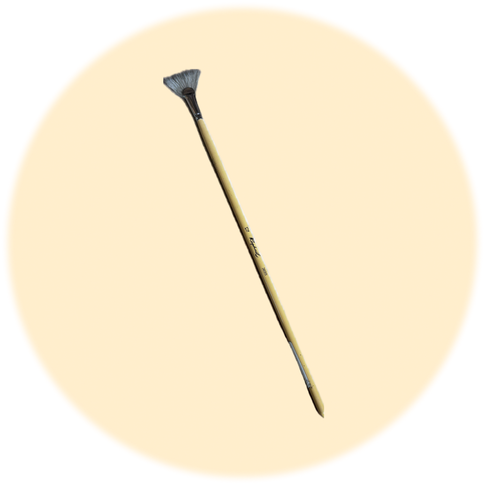

Objet trouvé !
Bravo tu as trouvé le pinceau long a poil fin
qui servira à nettoyer l'oeuvre d'art !

Maintenant grâce au plumeau à aile d'oie tu peux éliminer la poussière délicate qui peut s'accumuler sur les œuvres d'art au fil du temps.
Mais le travail ne fais que commencer. Clique sur continuer pour passer à l'épreuve suivante !
CONTINUER